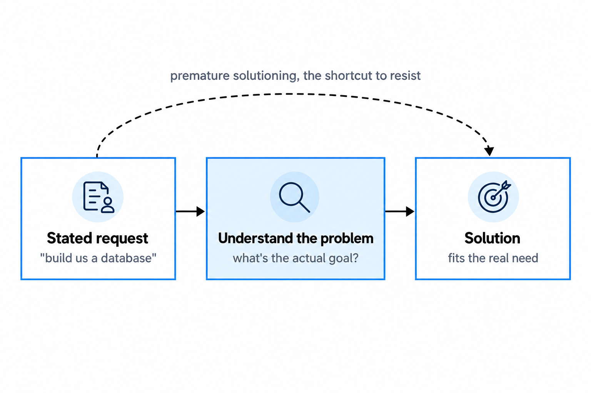
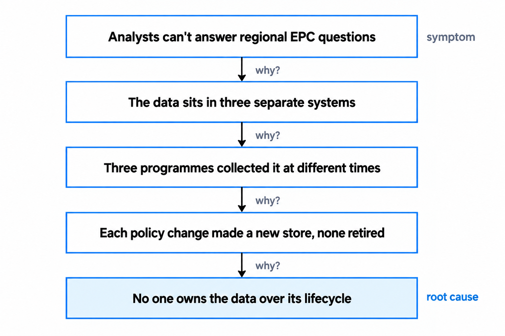
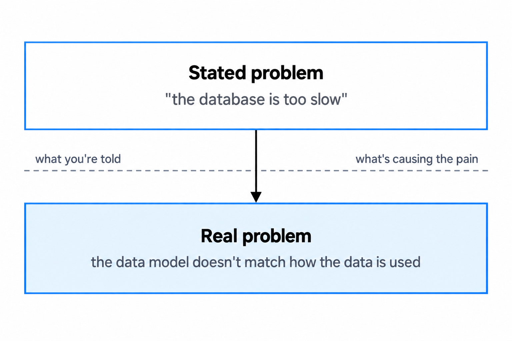
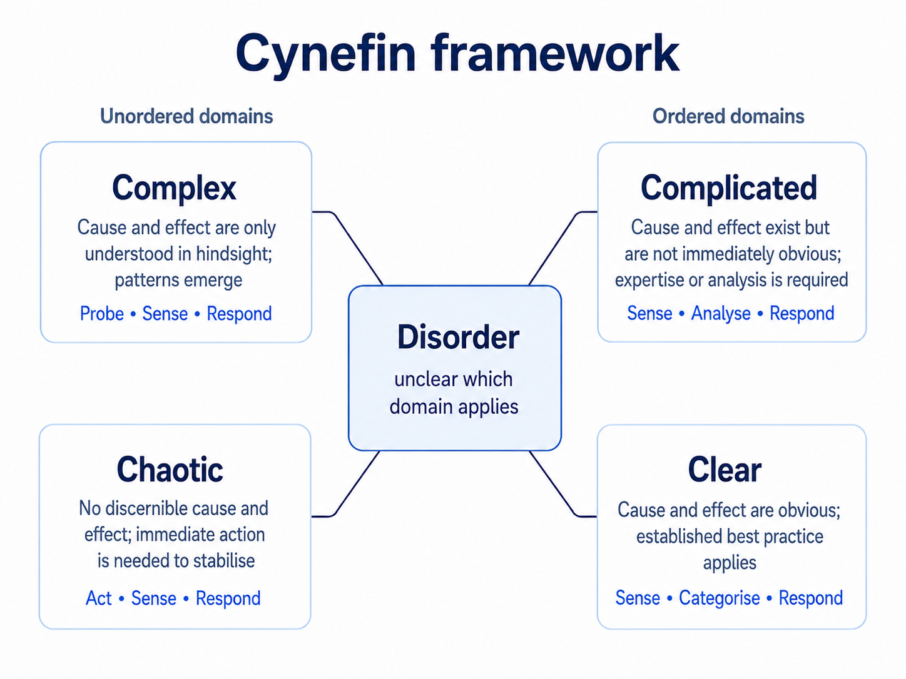

Understanding the problem before you design the solution
The most expensive mistake in solution architecture is solving the wrong problem, and in government it is also the hardest to undo. This guide is about the work that comes before design: framing the real problem, running a discovery that earns its keep, and knowing when you understand enough to start.
You'll come away with:
- A way to catch premature solutioning in yourself and work back to the real problem.
- Framing techniques that hold up against a vague brief, from the five whys to surfacing assumptions.
- What discovery is for in government, and the failure modes that quietly wreck it.
- A short test for whether you're ready to design, or just keen to.
The most expensive mistake is solving the wrong problem
Premature solutioning is the occupational hazard of anyone technical. Someone starts describing a problem and by the second sentence your brain is already sketching the fix. It feels productive. It is almost always a mistake, because the first framing you hear is rarely the right one. The person in front of you is describing their experience of the problem, their symptoms and their guess at what would fix it, not the root cause or the full set of people affected.

You see this in government constantly. A policy team asks for a database to track energy performance certificates. What they actually need is to answer questions like how many commercial buildings in the North East have an EPC rating below C. Accept the database framing and you might build something that works and still misses the point, duplicating data that already exists, or fixing storage when the real trouble is data quality. The discipline is to work backwards from the request to the need. Ask what they are trying to achieve, not what they want you to build. Ask what happens today, not what the system should do. This is not slowing things down. In government, where changing direction halfway through is brutally expensive, getting the problem right is the highest value thing you do.
When someone hands you a solution, your first job is to find the problem it was meant to solve.
Work back to the problem
Framing a problem well is a skill, not an instinct, and a few techniques do most of the heavy lifting. The plainest is to write a single sentence naming who is affected, what they experience, what it costs them and what evidence you have. For the energy example: say the analysts cannot reliably see the energy performance of commercial buildings by region, so they cannot target retrofit incentives well, and the evidence is a three-month delay in producing last year's regional analysis. Written that way, the conversation moves from build us a database to help us answer questions by region, and the solution space opens right up.
When you need to get past the symptoms, the five whys still works, but in government you have to be ready to follow the chain somewhere uncomfortable. The root cause is often a policy decision, an organisational boundary or an old procurement choice rather than anything technical.

The last technique is to surface assumptions and test them, because every brief arrives loaded with them. When someone asks for real-time data, ask what they mean: it is often within a day, not within a second. When someone says all users, count them, because it might be twelve people rather than twelve thousand. When someone says it must integrate with system X, ask why, because the integration may be a workaround for a problem you could solve another way. Each assumption you surface either confirms a genuine constraint, which is useful, or reveals a false one, which is better still, because it widens what you are allowed to consider.
Discovery is where you earn the right to design
The Service Manual calls discovery the phase where you learn about the problem you are solving. It is not a formality. It is the foundation everything else stands on. You are not running the user research yourself, but you have to engage with what it finds, because users working around a system with spreadsheets and phone calls are telling you exactly what the real one needs to do. You map who has a stake, which in government is always more people than you first think: policy, operations, legal, data protection, security, commercial, the assessors, sometimes a minister's private office. You work out what already exists, what data is available and what contracts box you in. And you separate the hard constraints, the legal and security and accessibility boundaries that do not move, from the soft ones like budget and timeline that shape your trade-offs.
Your job in discovery is specific. You are not designing the solution. You are making sure the problem is understood well enough that a good one can be designed. The usual way it goes wrong is impatience, and it shows up in a handful of recognisable traps:
- Confirmation bias. You arrive with a solution in mind and quietly collect the evidence that agrees with it. The fix is to ask what would make you abandon your current hypothesis, then go looking for exactly that.
- Stakeholder capture. The loudest or most senior voice defines the problem and goes unchallenged, often the policy team because they are seen as the customer. Make sure you also hear the operational staff and the people who actually use the service.
- Scope creep. Discovery shows the problem is bigger than anyone thought, so the team tries to solve all of it at once. Decide what the smallest problem worth solving first is, and let the rest wait.
- Analysis paralysis. Understanding the problem quietly becomes the whole project. Timebox it, and commit to deciding with what you have.
- The technology hammer. The team recently adopted something new, and now every problem looks like a reason to use it. Keep technology out of discovery altogether.
Discovery is where you earn the right to design well. Skip it and you pay later, in rework and in a solution that fits a problem nobody actually had.
The stated problem and the real one
Most experienced architects I have worked with collect stories where the stated problem and the real one had almost nothing in common. The stated problem is what you are told: we need a new case management system, the database is slow, we need to move to the cloud. The real problem is what is actually causing the pain, and it is usually quieter and less exciting.

The case management system is fine; the trouble is three teams running three processes who cannot see each other's work. The database is not slow; the queries are inefficient because the model does not match how the data is used. The cloud move is not a technical need; the data centre contract is expiring. Three habits find the real problem reliably. Follow the pain: ask what frustrates people about how things work today, not what they want the new system to do, and when everyone names the same thing you have your signal. Watch the workarounds: the spreadsheets, email chains and shadow IT show you precisely what the current system should do and does not. And challenge the brief, respectfully, which takes some nerve in a hierarchy. Asking for a week to understand why the current system is failing before anyone designs a new one is not obstruction. It is being careful with public money, and more often than people expect, the existing system turns out to be fixable for a fraction of the cost of replacing it.
The best architects save their organisations from expensive solutions to cheap problems.
Policy intent is the hidden driver
Most government digital services exist to implement policy, and that is a real difference from the private sector. The Service Manual treats it as a starting point: teams are expected to find the statement of policy intent behind their work, or reconstruct it from legislation, policy papers and ministerial commitments where none exists.If you do not understand the policy intent behind a service, you cannot design it well, because intent is the why behind the why. A policy team wants to collect energy performance data because the Climate Change Act 2008 was amended in 2019 to require net UK emissions to be 100% below the 1990 baseline by 2050, and the government needs to know the state of the building stock to target interventions Hold only the stated need and you might build a tidy data collection form. Understand the intent and you see that the data has to be analytically useful, comparable across regions and years, linkable to ownership and grants and planning records, and reachable by several teams across government. Same request, completely different architecture.
You uncover intent by asking what legislation or commitment drives the work, what outcome the policy is chasing, how success will be measured, what decisions the outputs will feed, and how the policy itself might move over the next three to five years. That last one matters most. Policy changes constantly, and a service built tight to today's version that cannot bend to tomorrow's will need replacing sooner than anyone wants. Policy colleagues will not always hand you this in technical terms, because they think in policy, not systems. Translating between the two is the job. When someone says we need to incentivise building owners to improve efficiency, you are the one who hears data collection, eligibility checks, payments, compliance monitoring, reporting and audit.
Tools for thinking, not documents to file
A handful of structured methods help you analyse a problem without turning discovery into paperwork. Impact mapping keeps you honest about outcomes: start from the goal, name the actors who can help or hinder, the behaviours that need to change, and only then the things you might build. Wardley mapping earns its place in government because it shows the maturity of each component, so you buy or reuse the commodity parts and save custom build for the genuinely novel ones, which is the reverse of the usual mistake. A PESTLE pass, adapted for architecture, makes you check the political, economic, social, technological, legal and environmental forces around the work before you commit to anything.
The one worth pausing on is Cynefin, because it tells you what kind of problem you are holding in the first place, and that changes how you should approach it. There is a fifth domain at the centre, which Snowden now calls aporetic or confused: you do not yet know which of the four you are in. That is where most discoveries start, and admitting it is the point.

Treat a complex problem as if it were merely complicated, reaching for a standard pattern instead of probing and learning, and you are setting yourself up to fail. In my experience most government work sits in the complicated and complex domains, which is exactly why a pattern lifted from somewhere else so often disappoints. The point of all these methods is the same. They are tools for thinking, not exhibits. A problem understood on a whiteboard beats a problem buried in a fifty page report every time.
Knowing when you're ready to design
Discovery does not produce an architecture. It produces the understanding that makes a good architecture possible. You are ready to design when you can answer a short set of questions honestly:
- What problem are we solving, and for whom? In a sentence or two, with no jargon.
- What does success look like, stated as outcomes you can measure?
- What are the hard constraints, the legal, security, accessibility and political boundaries that do not move?
- What already exists, across systems, data, services and contracts?
- What are the main risks, and how likely and how damaging is each?
- Who are the stakeholders, and what does each of them actually need?
- What do we still not know, and how will we close those gaps?
If you cannot answer these, you are not ready, and pressing on anyway is premature solutioning wearing the costume of progress. The output should be short and usable: a one or two page brief covering the problem, constraints, estate, risks and approach is worth more than a hundred pages of requirements. The aim was never to remove all uncertainty, which is impossible. It is to reduce it enough to make sound decisions and keep adapting as you learn, which in government, with its new ministers and shifting priorities, is worth as much as the ability to plan.
You're ready to design when you can say what the problem is without naming a single piece of technology.
This is one practitioner's account of moving into solution architecture in UK government, not official guidance. It does not cover enterprise architecture, security architecture, or architecture outside central government.
Last reviewed August 2026 against the primary sources below. Government policy changes; check the source before relying on this.